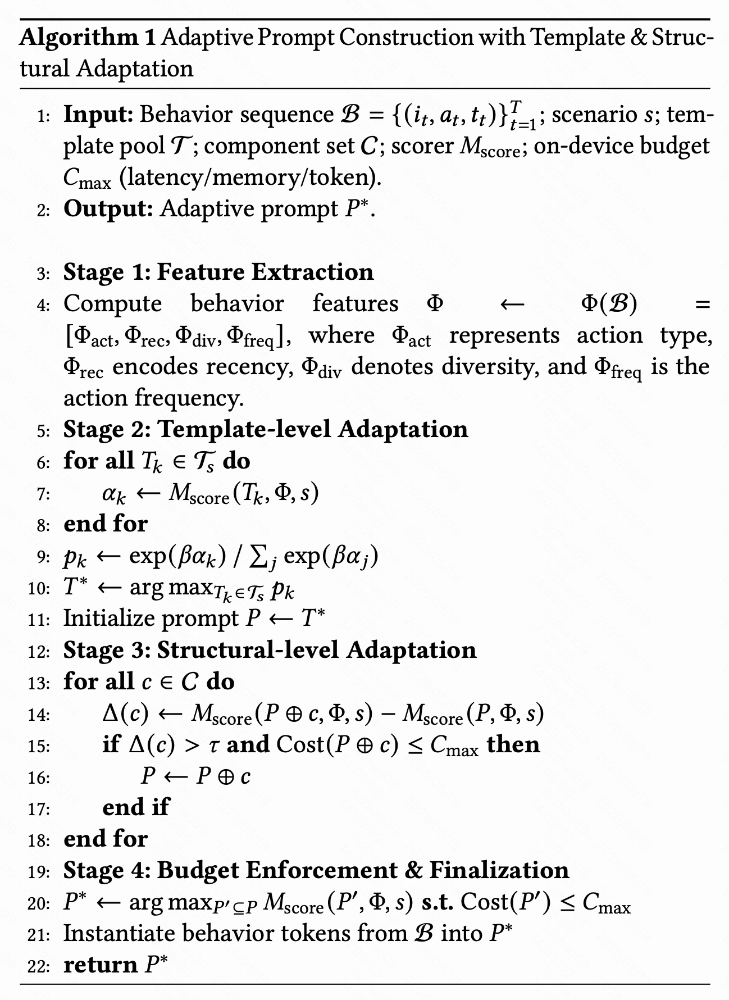
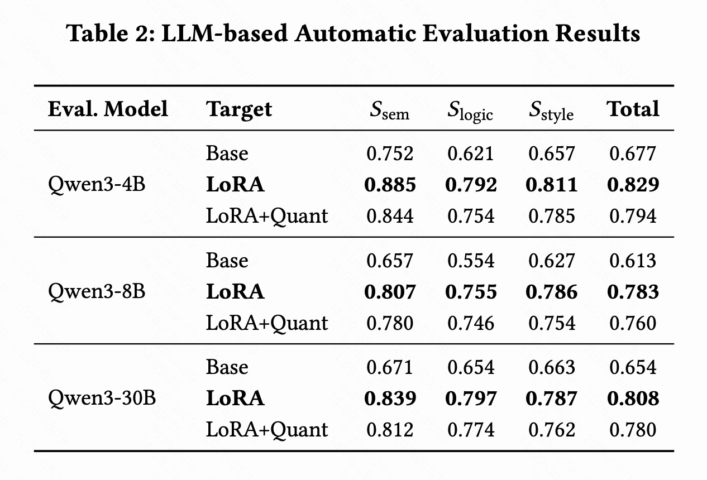
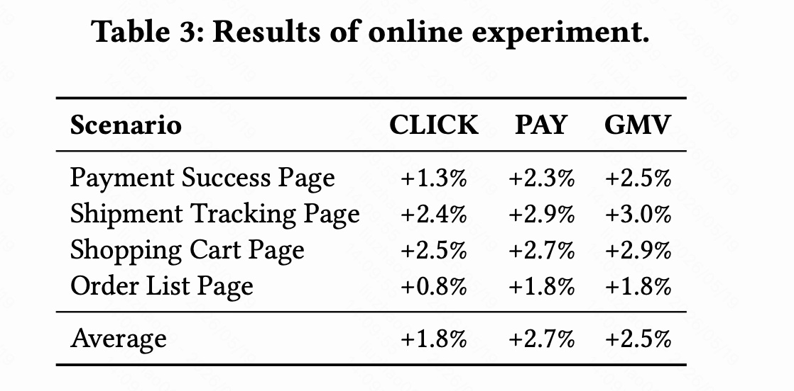

一句话概括
RecGPT-Mobile 把“用户行为序列到显式搜索意图 query”的推断放到移动端， 在端侧资源受限的情况下提升淘宝 feed 推荐的实时性和转化效果。
它不是一个完整的端侧推荐系统，也不是让 LLM 直接生成商品列表。 它更像一个端侧 intent agent：把用户最近的点击、加购、收藏、购买等行为 转成 query/tags，再交给云端搜索和召回系统。
1. 它解决什么问题
传统电商推荐大多是云端架构。用户行为从 App 采集、上传、清洗、进入特征中心， 再被召回和排序模型消费，这条链路稳定但天然有延迟。 Feed 场景下，用户可能在几十秒内从泛化浏览变成明确购买意图， 云端日志链路不一定能马上捕捉到这种 session 内变化。
论文的关键选择是把任务定义为 next-query prediction： 给定最近异构行为序列，预测用户下一步可能搜索的 query。 这个 query 比 item ID 更短、更稳定，也更容易接入现有搜索召回系统。
recent behaviors -> intent query/tags -> retrieval -> ranking
2. 系统整体框架
系统分成端侧 Client Services 和云侧 Cloud Services。端侧负责采集最近行为、 构造 prompt、运行 Intent Agent；云侧负责大规模商品召回、模型训练、模型同步和推理优化。

端侧模块
- User Behavior Collection：本地采集 click、cart、favorite、purchase 等行为。
- Prompt Construction：把行为、场景和用户画像压缩成适合小模型的 prompt。
- Intent Agent：端侧 LLM，将复杂行为信号转成明确 query/tags。
云侧模块
- Item Retrieval：根据端侧 query 做候选召回。
- LLM Training：负责 SFT、Prompt Adaptation、Inference Optimization、Model Synchronization。
3. 监督微调数据怎么来
论文用多源数据构造 SFT 样本，让小模型学习“行为序列到 query”的映射。 这部分很重要，因为端侧模型容量小，不能依赖模型规模自动补齐任务知识。
| 样本类型 | 来源 | 比例 | 作用 |
|---|---|---|---|
| Behavior-driven | 购买与搜索日志 | 60% | 学习真实行为到 query 的映射 |
| Co-purchase | 共购矩阵 | 20% | 补充互补需求，如手机到手机壳 |
| LLM-based | GPT 改写 | 15% | 增强表达多样性 |
| Human-annotated | 人工标注 | 5% | 提供质量锚点和校准信号 |
4. 自适应 Prompt 构造
端侧 LLM 的 prompt 不能无限长。Adaptive Prompt Construction 的核心是： 根据场景和行为特征选择模板、选择结构组件，并在 token、latency、memory 预算下剪枝。

- 从行为序列抽取 action type、recency、diversity、frequency 等特征。
- 根据当前场景选择最合适的 prompt 模板。
- 判断是否加入用户画像、商品标题、品类、品牌、行为时间等组件。
- 在端侧预算内保留边际收益最高的信息。
这一步本质上是信息选择问题：不是把所有行为塞给 LLM，而是在有限预算下挑选最能帮助意图预测的信号。
5. 什么时候触发端侧 LLM
如果每次点击都调用 LLM，延迟、功耗和发热都会不可接受。 论文设计了 Mobile Intent Agent Trigger Pipeline：只有当用户意图发生明显漂移时才更新 query， 否则复用缓存结果。

三个漂移信号
- Entropy：用户兴趣从发散到聚焦，或从聚焦到发散。
- Jaccard Similarity：当前语义标签集合和上一次触发点是否变化。
- JS Divergence：标签分布比例是否发生明显变化。
intent drift = 0.4 * entropy change + 0.3 * (1 - Jaccard) + 0.3 * JS divergence trigger when intent drift > 0.8
这个设计比“模型更小”本身更关键。端侧 LLM 能不能上线，取决于单次推理成本和调用频率两个变量。
6. 实验结果怎么看
离线自动评估显示，LoRA 微调显著提升生成 query 的语义一致性、逻辑一致性和表达质量； 量化后有小幅退化，但总体仍保留了大部分效果。线上部署使用 Qwen3-0.6B-Quant。


| 场景 | CLICK | PAY | GMV |
|---|---|---|---|
| Payment Success Page | +1.3% | +2.3% | +2.5% |
| Shipment Tracking Page | +2.4% | +2.9% | +3.0% |
| Shopping Cart Page | +2.5% | +2.7% | +2.9% |
| Order List Page | +0.8% | +1.8% | +1.8% |

7. 我的判断
最值得借鉴的点
- 把 LLM 放在语义中间层，而不是直接接管完整推荐链路。
- 用 query/tags 作为可控输出，方便召回、缓存、审核和回退。
- 用轻量统计信号控制 LLM 调用频率，避免端侧成本失控。
- 用少量人工数据做质量锚点，配合日志、共购和 LLM 改写扩展覆盖。
还没有完全展开的问题
- Adaptive Prompt 的 template pool、component set 和 scorer 细节不够完整。
- 触发阈值来自启发式搜索，不同设备和场景下是否稳定仍需验证。
- 论文没有充分展开功耗、发热、机型差异和前台 UI 流畅度。
- query 生成错误后的 fallback、过滤和置信度机制仍需要工程补充。
总体来看，RecGPT-Mobile 的价值主要在工程范式：它不让 LLM 生成最终推荐结果， 而是生成推荐系统真正缺少的实时语义信号。